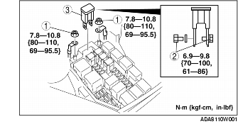
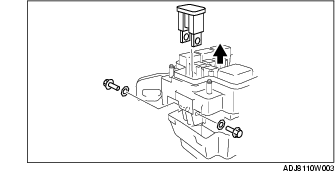

Main fuse removal/installation
1. Disconnect the negative battery cable.
2. Remove the main fuse block cover.
3. Remove in the order indicated in the table.

|
1
|
Nut
|
|
2
|
Bolt
(See Bolt Removal Note)
|
|
3
|
Main fuse
(See Main Fuse Removal Note)
|
4. Install in the reverse order of removal.
Bolt Removal Note
1. Remove the main fuse block cover tabs indicated by the arrows in the figure and the fixing bolts.

2. Lift up the main fuse block and remove the bolts.

Main Fuse Removal Note
1. Insert a tape-wrapped flathead screwdriver into the position shown in the figure.

2. Gently pry in the flathead screwdriver and remove the main fuse.
- • Prying the flathead screwdriver excessively could damage the main fuse. Gentry pry in the flathead screwdriver to remove the main fuse.